19 March 2002
Busy as a very busy thing (on a busy day)
Has it really been so long? Bloody hell! Where did all the time go? I probably have to apologise to a lot of people in this travelogue. I've been pretty crap at keeping in touch. Also, it has taken me ages to even start writing this. I've just been pretty flat out on my current project. But more about that later...
I don't know why it takes me so long to write one of these. Maybe it's the lack of travelling. I've sort of settled here, so things seem less exciting. It's still good fun of course, but travelling seems to add something a little extra.
Back in the UK
First piece of news (well, hopefully most people will know this already) is that I am back in the UK. I spent about three months out in Dubai. Enough to get used to it again at least. I thoroughly enjoyed my time there, and still miss the place a lot. In a lot of ways I regret not staying out there a bit longer. There is a lot to miss about the place, but I'm quite enjoying being back here for now.
I had some hassles from customs/immigration about returning to the UK. I guess it was due to me returning on a visit visa so soon after being here on a travelling-holidaymaker one. It's not an issue now though, as I've taken a permanent role and now reside under a proper work visa.
Finding a flat
First thing we had to do is look for some quick digs. Liezl's job is in Cheltenham, and we were looking for a flat somewhere near the Hospital. First person I called was Hamish Mead who lived in nearby Hereford. He found us a room available at the Bristol and Gloustershire gliding club at Nympsfield. The room was super-cheap, and was a good base to hunt for a flat from. I also got into a little spot of gliding. I've done about 7 flights and really enjoyed it. Although, I've been a little too busy to keep it up, which is a shame.
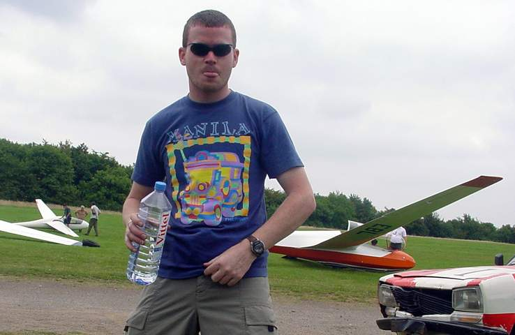
That towing van on the right was like that before I drove it.
Honest.
Click on the picture to see 'Dave the pilot' in action. I was at
the controls for this takeoff. (142kbytes)
The flat search was a bit of a mission. Unfortunately I am completely anal about my car (I am improving though). I wanted somewhere with parking and a spare bedroom to use as a study. Liezl wanted a garden and a nice kitchen (and close to the hospital). We looked at tons of places, and found something pretty decent. The only thing I had to give up was the parking, as the flat is in a row of terraces. So the poor Porsche gets left out on the street. It's been six months and no dents/scratches worth crying about yet (touch wood), but I'd still prefer to either get rid of the car, or get a place with proper parking.
The house could have been closer to Liezl's work (we are about a mile away from the hospital), but the garden is really nice to have and you just don't get that any closer to town. (or you might, but it'll be damn hard to find) It's only a ten minute walk to get into the centre of Cheltenham, and the 24 hour Tesco is only 5-7 minutes away. So it's pretty convenient
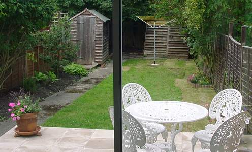
I don't have a decent wide angle for inside the house, but at
least I can show you the back yard. Tiny isn't it... But it's a
pretty size decent for the UK. (sad)
We did find a couple of great places that might have been more suitable, but they didn't have showers. I just can't understand having a house without a shower... Crazy Brits. Now that we've been living here for about 6 months we are reasonably happy with the place. It's a 10 minute walk to town which is really nice. Cheltenham is a great place to live to. It's nice being outside the M-25 for a little while.
Sept 11th attack
I thought I'd mention this, as it's a pretty huge event. I think I was the last person on the planet to find out about it. While everyone else was glued to their TV sets, I was busy coding away... That is one of the problems of working at home. No social interaction. Liezl ended up calling me from work to see whether I'd heard. After that it was a very unproductive day.
Pretty scary images. Especially if you were the insurance
underwriter!
I turned on the television set and was hooked. What a spectacular. New video footage of planes coming in from different angles. The buildings collapsing. Pentagon in flames. It was a scene from some crazy action film. Only this was real.
But the whole 'America under Attack' theme got boring very quickly. The bit that blows me away is how publicised the whole thing is. It seems like hypocrisy to go so over the top about a terrorist attack on America that kills 4000 people, yet hardly anything was shown (in comparison) about the 800,000 odd people murdered in Rwanda during the 1994 genocide.
And while some of the footage was a little frightening (people jumping out of the building etc...) it still wasn't as scary as that wedding video in Israel where the floor collapsed under all those people. That still rates as the scariest thing I've ever seen.
The state of the IT market
Things are pretty rough in the contracting market here. I've never known so many people to be out of work. It's beginning to pick up again, but I'm a little doubtful whether it will ever fully recover from the dotcom bust and recent recession. Bit of a bugger of a time to be looking for work, but there you go...
My Project
Not sure what to say about this. It's sort of been some mixed blessings here. I originally took a three month contract which extended into crazy lengths. I've now chewed through all my savings and am reasonably miserable with the way the whole thing has worked out. It's a long story, and I'm not going to go into it here, but basically I've learnt a lot and (hopefully) won't be making the same mistakes again.
That said, there are some good things come out of it, so it's not a total loss. But I must admit, I still sometimes wish I'd stayed in Dubai. But you never know till you try these things do you...
Almost a white Christmas
My Dad came over to stay for Christmas. Which was great, because I wasn't able to go to New Zealand. (Just too darn busy) Also, it saved me the hassle of travelling. I've never done the UK-NZ flight non-stop. And I'm not sure I ever want to. It has to be pretty tough on the body. My idea of travelling is to never cross more than four hours worth of time zones in any given week. If I could I'd go by boat. Or better than that, just stop off twice for a few days in places like Dubai, Singapore, Los Angeles and New York.
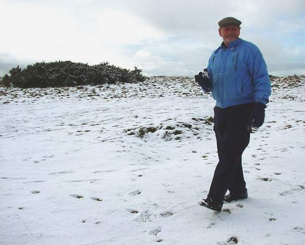
We had a little bit of snow, but it disappeared after a day or
two.
It was a bugger that I had to work while he was over. I really wanted to go touring Italy or something while he was here, but with the project extending to April (gulp) I wasn't able to take much time off. (I'd already booked 6 days leave for my snowboarding trip in Jan/Feb 2002) That said, we did manage to get around and see a few sights. Saw Stonehenge, yet again. Ran up and played in the couple of inches of snow that dumped in the hills next to Cheltenham. Out to dinner a lot. Looked around London, that sort of thing.
One frustrating thing is having a two-seater car. I had to hire a car to get the three of us in to London. Not that big a deal, but sometimes it'd just be easier owning something a little more practical. (Think I may have to sell it some time this year...)
Paris for a day
Did a day trip to Paris which was great value. We drove down to Portsmouth and caught the night ferry across the channel. I can't say I slept at all on the way over, but coming back was okay. (Guess I was completely knackered by then)
One thing I did notice in France was how fast everyone drives. I thought they drove quickly over here! That said though, the roads were good and the petrol was cheap compared to the UK. But they make up for cheap petrol by having toll booths every 20-30kms along the motorway. I was a little freaked out when we came to the first one. Here I was thinking that I've got no Euro money yet, and have to go through a toll booth. There are three different types of lanes, one with a 't' symbol, which looks like it's for some sort of electronic smart-ticket, another few lanes with the word cartes (meaning cards), which take credit cards, then the trusty people-manned lanes that you can give change or cards to. These last lanes have a symbol of a person inside a box. The toll booths do have the effect of smoothing out the traffic, so you never come across huge clumps of trucks or slow moving cars. All in all it seems to work well. And it must help pay for those incredible tunnels you come to as you drive into Paris! I'm not sure if I've ever been through anything so long. 3-4km long tunnels leading straight into the heart of the city.
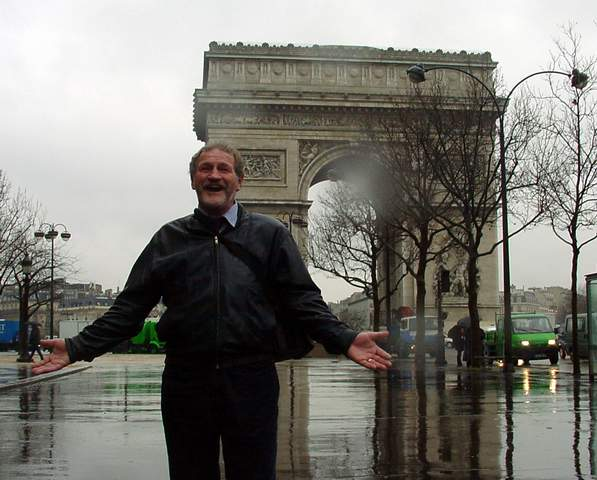
Bloody hell! Where did all this #$%&*! rain come
from?
Unfortunately it was a pretty miserable day to be walking around Paris, but after we scored an umbrella each, it was a little more bearable. The highlight of my day was getting around with my incredibly basic French. I can barely speak it, yet we still managed to get around without any big fuss. Most people we met couldn't (or wouldn't) speak English, but in a way that just made it more satisfying once you successfully ordered a couple of coffees. It made mundane things seem like great achievements.
We did the typical tourist things, L'arc de Triomphe, Eiffel Tower, Notre Dame etc... And spent the rest of the day drinking coffee (trying to keep away after a mostly sleepless night). We barrelled back to Le Havre with plenty of time to spare for the return crossing. This time I managed to get a bit more sleep on the ferry. I guess it helped being completely exhausted...
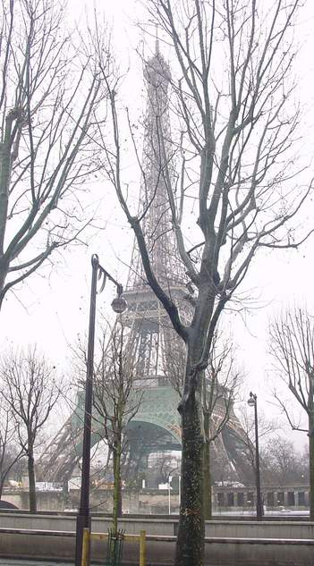
I'm not sure was this big antenna thing is, but it looked pretty
neat!
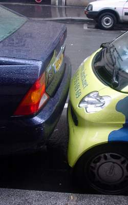
They like to park a little more intimately in Paris.
But time seemed to fly very quickly, and the next thing I know I was dropping Dad off at the airport for his hellish 30-hour journey back to NZ.
Montana - Powder country!
I'm of two minds to tell people about how great the snow in Montana is. I mean, if I tell tons of people, and you all flock there, then it is my fault if the place is incredibly busy next time I go. But the snow was so good, if I don't tell people, then I think I will explode!
Damn that snow was good.
It's funny. We had almost no snow in Europe, but there was tons in Montana. In Cheltenham, we got a couple of inches settling on the hills just north of the town, but apart from that, nada. If anything, it's been unseasonably warm in the UK. I just remember it still snowing in London in April last year. (didn't settle, but it snowed at least) I don't know what happened, but there just isn't snow in Europe.
But there was a lot of snow in Montana. And it was good. :-)
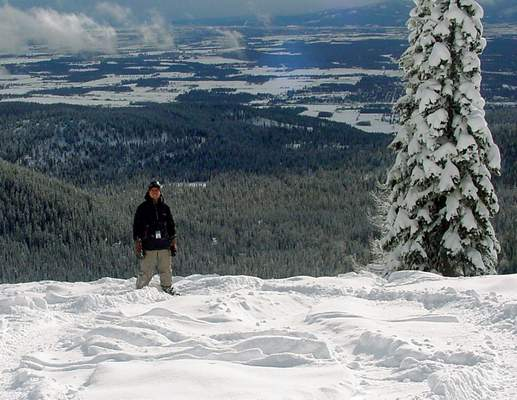
Mmmmm... That glorious powder. But remember. It wasn't as good
as it looks. (Not worth the trip really. Don't go... Stay
home...)
Admittedly the visibility sucked most of the time. For two of the days we got some nice sunny spells, just after it dumped a bunch of fresh snow. You couldn't ask for anything better than that. But the rest of the time, the cloud cover was in and it just kept dumping more snow. (Did I say that the snow was good?)
There was too much snow though. All that powder can't be good for you... I'm totally spoilt for boarding in Europe now.
I can't say I progressed as a boarder. I was having to much fun in that great snow to concentrate on improving my technique. Although, I did manage to do a few jumps without falling down. But even when I did fall down after doing a jump, it didn't matter. Because all that great powder snow was breaking my fall. HA HA!
You can probably tell I had a good time. And I did. I think it helped me un-stress a huge amount. (10 days in great snow has that effect on me)
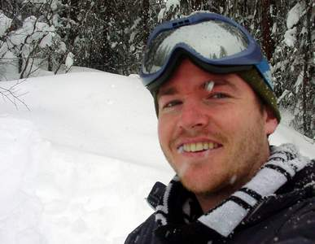
See! Don't I look relaxed?
Whitefish was a great little town, and everyone was really friendly. I didn't have a fantastic opinion of Americans before I went, but they are much improved in my eyes now. (They still have this strange notion that their country is the best in the world for some reason though....)
Something I noticed was almost all of the men in Montana sported a beard of some sort. I think that the Golden Shower ski-team (us) were the only guys in the State that didn't have beards. So half of us grew them over the time we were there. (The other half looked like girls, but they didn't seem to mind) Major kudos to Paul for the Golden Shower ski team name. Apparently we were there celebrating the Queen's Golden Jubilee. We got a lot of interest from locals wondering whether we were some professional sportsmen. Obviously they didn't see our utter lack of skill on the slope, or the general unfit-flabby-untoned bodies that we possessed. Go figure!
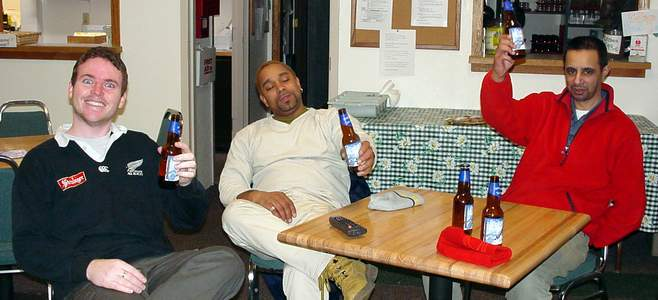
I'm not sure, but there may have been some drinking.
Something else that I noticed, was America was at war with some terrorists apparently. And just in case you happened to have a 3-minute memory span, they told you, over and over and over again. (layer upon layer upon layer...) It got on my wick a bit. Nice to see they've sorted out the Taliban though. I couldn't imagine a more deserving group of arseholes.
Itlog na maalat - Filipino salted egg
I had my first go at making Filipino salted egg. It's called Itlog na maalat. (which just means salty egg - funnily enough) Basically, what you do is make up a super-saturated solution of salted water. Just putting more and more salt into the water until no more dissolves. Then you put raw eggs in for about 2-4 weeks. (depending on how salty you want them to get) I guess they just absorb the salt through the shell. Once they have been in the solution long enough, you take them out and boil them. They normally get coloured red (with food colouring) to distinguish them from normal eggs. Yey says that I should use duck eggs preferably. But to start with I went for the basic chicken variety. I left them in for three weeks, but they probably would have tasted better with another week I reckon.
The salt evaporates a little, and a film built up all over the bowl. I was breaking off 3mm thick salt crusts. Wicked!
Wedding Bells
For those of you who know them, Hamish and Sarita got hitched. Crazy huh? I think Sarita must have been on crack, but at least Hamish has a job and doesn't smell too awful, so maybe it wasn't such a bad idea. I'll was there with my digital, so here are a few pictures from the experience.
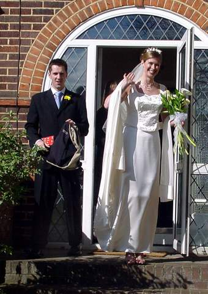 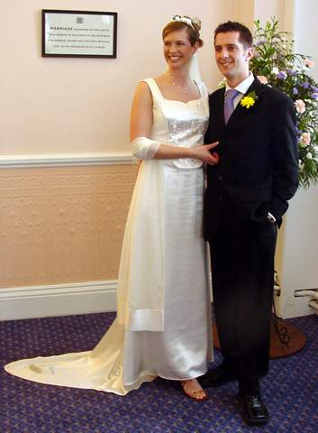 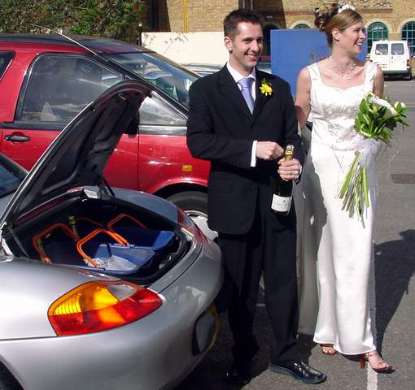
T'was a jolly good day, and we even got some nice sun for the champers out in the car park. The dinner was absolutely delicious. The actual ceremony was over pretty quick. I think both Hamish and Sarita were a little nervous. I'm not sure I've heard the vows said so quickly before. Cheers to them both, and here is to a happy future together!
Return to Castle Wolfenstein
It's getting old now (well, at least a few months old), but I still love this game. Liezl bought me RTCW for Christmas, and I've been playing it ever since. I think I've gotten reasonably good at it too. I play as Womble-NZ, and this is my highest score so far (302). Most players I play against come from Belgium, Germany, Sweden, France or the UK. But it's nice when a wee lad from Kiwi-land whips their puny butts!

There is a new game out called Medal of Honour - Allied Assault that I wouldn't mind getting my hands on. But so far I haven't been keen enough to pay the £34.99 price in the shops. I'll wait a few months and get it when it's a little more reasonable I think.
Selling the Porsche
Yeah, I know it's a bit rough, but I'm hoping to buy a flat, and I could use the money. So if anyone knows of someone stupid and rich. Point them my way. That said, it is a bit sad to see it go. I haven't had any nibbles yet, but I've only had it advertised a week.
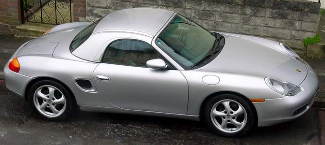
FOR SALE - CHEEP!
Still, I won't be too bothered if it doesn't sell. Summer's coming, and it is going to be nice to have then. (Have to biff the hard top out in to the shed though)
Dubai didn't happen
Yey and I were meant to head out to Dubai for a short visit to see her daughter, but it didn't happen. The lovely people at UAE immigration have decided that single women under the age of forty, who require visas, won't be granted them. Bastards! Bit of a bloody shame we'd bought non-refundable tickets then. (Dammit!)
Apparently it is to stop people from overstaying. Some pathetic attempt to curb the rampant prostitution that goes on in that country. I guess from my tone you can pick up that I'm a little pissed off about it. Well, it did ruin most of our plans. We had a backup though, which was to go into London and get horribly drunk. Sure, it wasn't Dubai, but it beat crying about it. Bah! Who wants to go there anyway. Too much sun and sand for my liking...
Wrapping up
I'm about all out of banal things to say, so it looks like time to sign off yet again. Sorry about the half a meg of images in this travelogue, but I really couldn't be bothered trying to mega-optimise them.
I'll try not to leave it so long until the next time. But
knowing me, I probably will.
Ciao all.